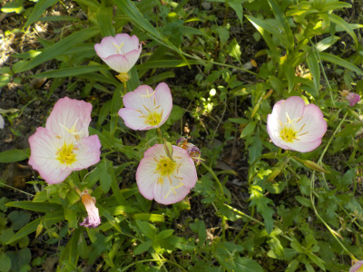
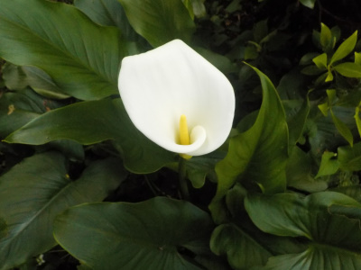
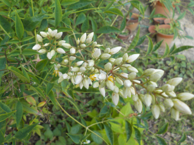
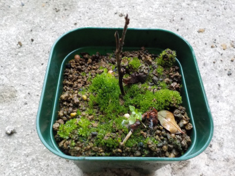
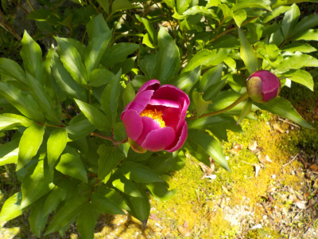

遊びで植物を育てよう
2021/05/30
雑草と一緒にいるヒルザキツキミソウ。

雑草の中でヒルザキツキミソウが咲いていました。
綺麗なので種を採ってあちこちに植えても良さそう。
でもコレ増やすよりマリーゴールドの方がいいかな。
【5月TOP】
【日記TOP】
【園芸TOP】
2021/05/29
地植えの巨大カラーは立派です。

地植えのカラーがあるんですが、大きな葉っぱが茂っている中に大きな白い花があり、とても芽だっていました。
花だらけもいいですが、緑との組み合わせもいいですね。
【5月TOP】
【日記TOP】
【園芸TOP】
2021/05/29
南天の花が咲きだしました。

黄色い小さい花より、白いツボミがきれい。
白から黄色にいつなったんだろう？
【5月TOP】
【日記TOP】
【園芸TOP】
2021/05/15
挿木したり種蒔きをしていますが、枯れるとなんだかわかりません。

生きているうちは葉っぱの形から植物の名前が分かりますが、枯れると何かさっぱりわかりません。
ネームプレートは付けた方がいいですね。
【5月TOP】
【日記TOP】
【園芸TOP】
2020/05/09
シャクヤクの花が少なかったです。

今年はシャクヤクの花が少なかったです。
管理が悪かったかな。
花数が少なくても十分綺麗なので、これはこれでいいかな。
【5月TOP】
【日記TOP】
【園芸TOP】
過去の日記
【2024年5月の日記】
【2023年5月の日記】
【2022年5月の日記】
【2021年5月の日記】
【2020年5月の日記】
【2019年5月の日記】
【2018年5月の日記】
【2017年5月の日記】
【2016年5月の日記】
【2015年5月の日記】
【2014年5月の日記】
【2013年5月の日記】
【5月TOP】
【日記TOP】
【園芸TOP】
畑仕事じゃないよ。
【おいしいものを食べよう。】【たくさん寝よう。】
【ソロ活をしよう!】【季節感のあることをしよう。】【動画視聴はほどほどに。】【当サイトの全てのコンテンツは無断転載禁止です。】